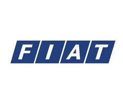
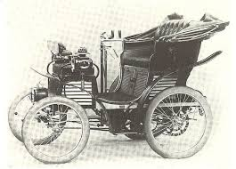
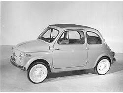

Historia de Fiat
Fiat, cuyo nombre completo es Fabbrica Italiana Automobili Torino, fue fundada en 1899 en Turín, Italia, por un grupo de inversionistas liderados por Giovanni Agnelli. Desde el principio, la marca se propuso crear automóviles accesibles para el público, marcando el inicio de una nueva era en la industria a utomotriz italiana

Giovanni Agnelli fue el alma de la empresa. Bajo su liderazgo, Fiat se convirtió rápidamente en un símbolo del progreso industrial italiano, exportando sus primeros autos ya en los primeros años del siglo XX.
El primer automóvil de Fiat, el modelo 3½ HP, tenía capacidad para tres personas y alcanzaba una velocidad máxima de apenas 35 km/h. Aun así, representó un enorme avance tecnológico para la época. Durante las décadas siguientes, Fiat creció hasta convertirse en el mayor fabricante de autos de Italia. En los años 50 y 60, modelos como el Fiat 500 y el Fiat 600 se transformaron en íconos del diseño italiano y ayudaron a motorizar a miles de familias europeas tras la Segunda Guerra Mundial.
Con el paso del tiempo, Fiat amplió su influencia internacional adquiriendo marcas como Ferrari, Lancia, Alfa Romeo, Maserati y más tarde Chrysler. En 2021, la empresa se unió al grupo Stellantis, que reúne marcas europeas y americanas bajo un mismo nombre. Hoy, Fiat continúa siendo una marca reconocida por su innovación, diseño elegante y compromiso con la movilidad sostenible, apostando cada vez más por la electrificación y los vehículos urbanos.